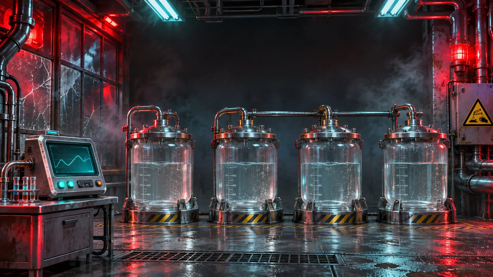

УРОВЕНЬ ОПАСНОСТИ60%
ОТСЕК № 5АВАРИЯ В ОТДЕЛЕНИИ ГАЛОГЕНОВОДОРОДНЫХ КИСЛОТ
ВОССТАНОВЛЕНИЕ40%
ЗАДАНИЕ 1 ИЗ 5
АНАЛИЗАТОР
Кислотный блок нестабилен.
Восстанови показания системы.
Восстанови показания системы.
H⁺Cl⁻
HF — слабая кислота, но она не является безопасной.
Перетащи название на резервуар или выбери название и нажми на сосуд
⚠ ОТСЕК № 5 — КИСЛОТНАЯ УТЕЧКА
В блоке галогеноводородных кислот произошёл сбой. Восстанови резервуары, показания анализатора и маркировку кислот.
Нажимай прямо на резервуары HF, HCl, HBr и HI, а также на элементы анализатора.